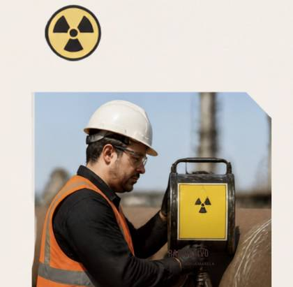
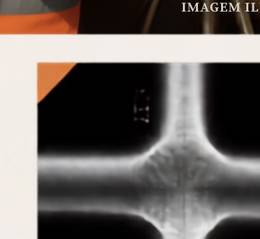

A Radiologia Industrial é uma área que vem conquistando cada vez mais espaço em diferentes setores da indústria. Seu trabalho está diretamente relacionado à qualidade, à segurança, à confiabilidade dos processos e à avaliação de materiais e estruturas.
É um campo que exige conhecimento técnico, responsabilidade e, sobretudo, profissionais preparados para lidar com tecnologias em constante evolução. Entre os principais segmentos estão a Radiografia Industrial, aplicada à inspeção de soldas e estruturas; os Medidores Nucleares, utilizados no controle de processos industriais; e os Irradiadores Industriais e Aceleradores Lineares.

